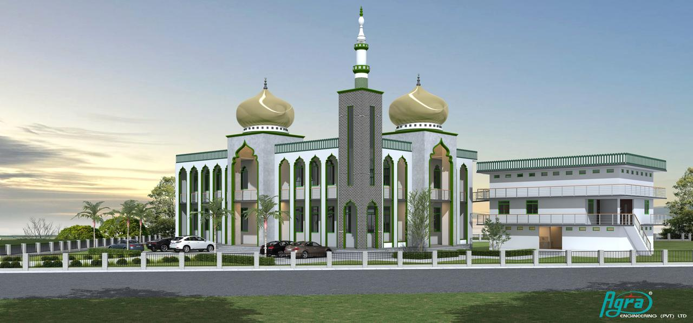
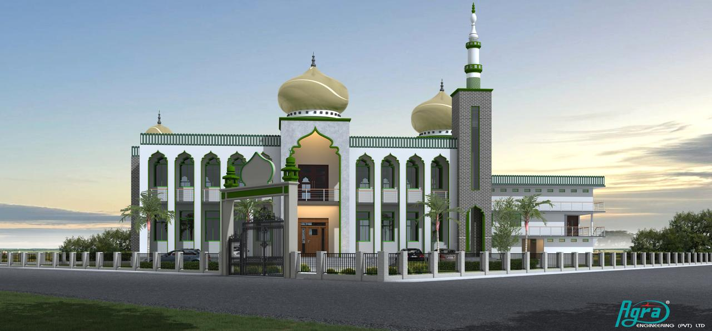

Worship & remembrance
Providing a welcoming place for congregational salah, Jummah and spiritual reflection.
Located in Ethungahakotuwa, Udubaddawa, Kurunegala District, Al-Masjidul Hasaniyya Jummah Mosque serves the local Muslim community and neighbouring areas.
The mosque has been a place for congregational worship, religious learning and community connection. Its purpose is to help nurture faith, encourage good character and bring people together in service to Allah and one another.
We welcome the community to take part in the life of the masjid and contribute to its continued development.


These values guide the role of the masjid in the everyday life of our community.
Providing a welcoming place for congregational salah, Jummah and spiritual reflection.
Supporting Qur’anic education, religious knowledge and the development of good character.
Strengthening bonds between families and encouraging kindness, cooperation and charity.

Every prayer, lesson, act of service and contribution helps sustain a welcoming place for future generations. May Allah bless this community and accept everyone's sincere efforts.
Find our location →